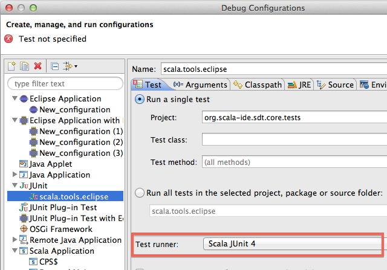
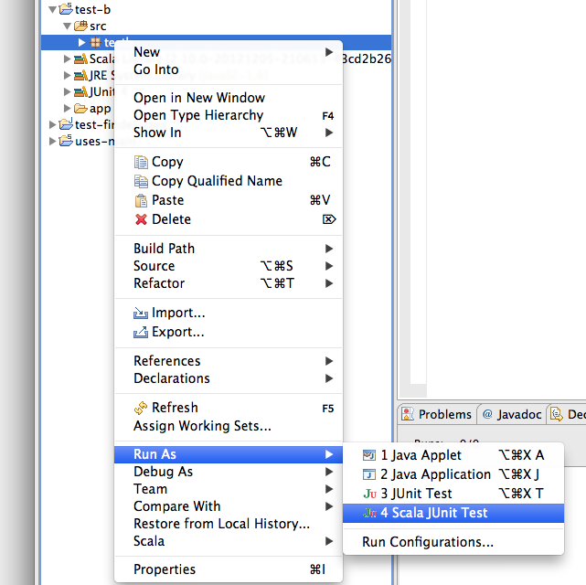

Scala JUnit Test Finder new
The plain JUnit test runner of Eclipse works well for Scala projects as well. If one does not need (or cannot use) a Scala-specific testing framework such as ScalaTest (that comes with its own Eclipse plugin), JUnit is a good default. In this release we added a specific test finder for Scala projects (the default Java one was unreliable, and often missed Scala classes that define unit tests).
To enable the new test finder simply select Scala JUnit 4 from the drop down list of test runners in the usual JUnit run configuration.
The Scala JUnit 4 runner is automatically selected when right-clicking on a file (package, project or source folders are also supported) if the project has the Scala nature.
Limitations
The current Scala test finder does not find:
- tests using the 3.8-style (extending TestCase)
- tests that have no @Test annotations, for instance a test that inherits all the test methods from a super class. This limitation can be worked around by adding @Test in a comment.
The missing functionality depends on having a good Scala Search implementation, planned for Lithium.